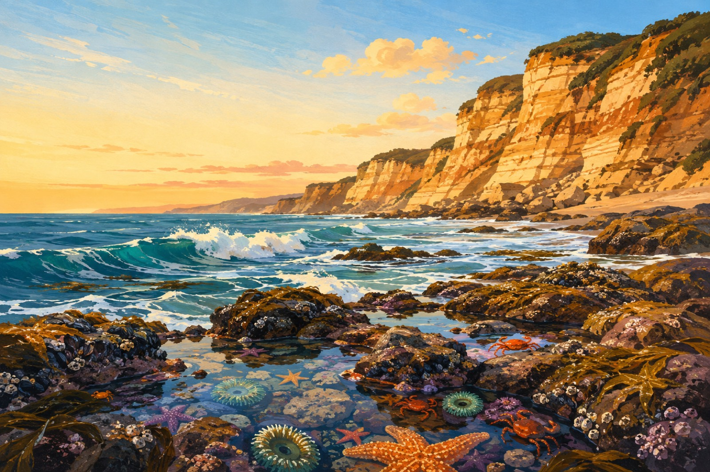

BREAKFAST
Moonside Bakery & Café
European pastry counter plus pancakes, waffles, sandwiches, and wood-fired pizza—the easy everyone-wins start.
Maps
Trip weekend is here — go make a little coast chaos.
Navigate to The Ritz-CarltonClear #1 for three boys: Main Street Italian, pizza on the menu, friendly early dinner timing, and then everyone can walk to sweets. Weekend dinner starts at 4pm; reserve online or call.
Call 650-726-4444Book online ↗Backup #1 — Pasta Moon: wood-fired pizza + house pasta; ~7 min, $$–$$$, reserve. Sun 11:30–2 & 5–8:30; Mon 5–8:30. 650-726-5125
Backup #2 — Mezza Luna: harbor Italian and lots of familiar choices; ~12 min, $$–$$$. Sat dinner 4:30–9; Sun 4:30–8:30. 650-728-8108
European pastry counter plus pancakes, waffles, sandwiches, and wood-fired pizza—the easy everyone-wins start.
MapsA historic caboose with serious burgers and roadside classics. Tiny, memorable, fast-casual.
MapsFish tacos, street tacos, quesadillas, churro bites, and a real kid menu right in downtown.
MapsThe harbor shack: fish & chips, chowder, and boats right outside. First-come, first-served—go early.
MapsOceanfront seafood, a kids menu, and the famous chowder / lobster-roll move. Big view, busy room.
MapsHarbor-front pub food with a broad menu and weekend brunch—excellent when the group wants different things.
MapsBritish pub comfort food, fish & chips, chowder, and a double-decker bus dining room.
MapsBig, casual harbor pub with brunch and live-music energy. Good low-pressure backup.
MapsGummies, taffy, retro soda, licorice, fudge: a perfect post-dinner detour.
MapsClassic rocky intertidal habitat: anemones, crabs, urchins, limpets, and maybe seals. Look, don’t touch; no collecting. Enter at 8am; Labor Day closing 8pm. Free neighborhood parking is limited—be respectful and don’t block driveways.
MapsSmall sandy cove with rocky tide pools and honeycomb rocks. Observe anemones, crabs, and urchins; no collecting. Cold water and rip currents = no swimming.
MapsGreat harbor-and-surf stop; don’t treat Mavericks as a casual tidepool beach. Watch from shore, heed surf and cliff warnings.
MapsWalk roughly 300–850 Main: pastry at Moonside, gifts at Jupiter & Main, candy at Small Town Sweets, then Surf Factory for an actually useful coast hoodie.
MapsSurf gear and clothing at Main Street and the harbor—best practical sweatshirt/hoodie souvenir stop.
MapsA funny, old-fashioned general store for gifts, clothes, books, and browsing.
MapsHonest answer: research found no true Pokémon / TCG shop in Half Moon Bay itself. The closest solid, verified choice is What’s On 2nd in San Mateo—explicitly stocks Pokémon cards. Go Saturday: it is closed Sunday.
MapsReal hobby shop with Pokémon game events; more of a detour, but open all weekend.
MapsEasy base camp for sand time and a paved roll south/north. Bikes/scooters are great; beach fires are not allowed.
MapsWalk the docks, watch the fishing fleet, grab seafood, and look for kayak/SUP or charter availability. Rentals/charters are weather-dependent—book direct.
MapsProper forest reset: choose the gentle first mile of Purisima Creek Trail or the 0.25-mile accessible Redwood Trail. Parking on Tunitas Creek Rd is limited.
MapsThe maze is usually open by July 1; the rest of the attractions normally begin Oct 1. Call ahead for Sep 5–7 maze status.
MapsIt is actually open this weekend: rides, animals, and pumpkin-patch energy. Reserve a timed pass, especially on Saturday.
MapsA smooth former Highway 1 route with ocean lookouts—an easy 2.6-mile out-and-back. North of the hotel, so pair it with a Pacifica stop.
MapsNavio advertises a Labor Day Sep 4–7 brunch and dinner Fri–Sun—book ahead. The Conservatory is the weatherproof on-property fallback; Ocean Terrace fire pits / s’mores are the low-effort nightcap. Ask concierge for same-day hours and availability. The bagpiper is a known Ritz tradition, but no current public Sep 2026 time was verified: ask the concierge on arrival.
MapsSaturday: Coastside Farmers’ Market is listed 9am at Shoreline Station. Monday: county harbor office is closed; Dad’s is closed; independent-shop hours can shift. The public harbor, beaches, and trails are still the safer plans.
No major Half Moon Bay festival was listed for Sep 5–7 in the destination calendar; the annual Pumpkin Festival is in October. The weekend does have normal holiday crowds. Morning marine layer often gives way to clearer afternoons, but coast weather changes fast.